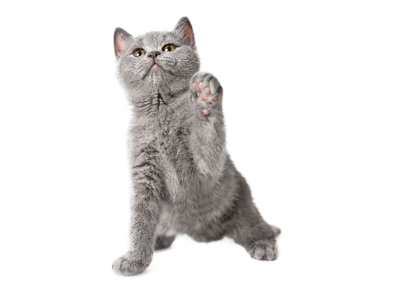

Adote um Amigo Peludo e Transforme Vidas!
Ao adotar um animal de estimação, você não está apenas mudando uma vida, mas sim criando um vínculo que transcende palavras. Cada patinha que você acolhe traz consigo uma promessa de amor incondicional e alegria compartilhada. Venha fazer parte dessa história de cuidado e compaixão.
Conheça nossos amigos para adoção
Animais esperando por um lar amoroso
